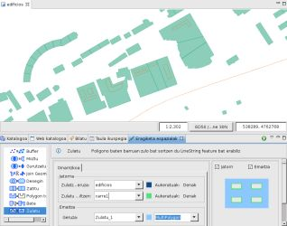
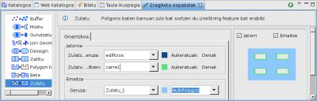
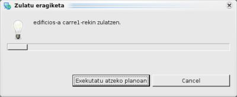

{kind=link}
{kind=link}
{kind=link}

4 irudia. Emaitza Geruza.
Poligono baten barruan zulo bat sortzen du LineString feature bat erabiliz.
Zulatu eragiketak zulatzeko geruzaren featureak hartzen ditu eta zulatzaile geruzaren LineStrig featureak erabiltzen ditu featurearen barruan zulo bat egiteko. LineString featurea erabat poligono feature barnean egon behar da.
Zulatu eragiketaren emaitza geruza berri baten, dagoen baten edo zulatzeko geruza berean gorde daiteke.
Adibide honetan poligono motako edificios.shp geruzaren eta LineString motako carre1.shp geruzaren artean Zulatu eragiketa burutuko dugu.

1 Irudia. Eragiketaren aurretik.
Eragiketa Espazialen Bistara goaz, eta Zulatu aukeratuko dugu Eragiketen menuan.
Zulatu Eragiketaren aukera espezifikoak agertzen dira.
Eragiketaren sarrerako balioak adierazi behar ditugu, 2 irudian agertzen den bezala:

2 irudia. Sarrerako eta emaitzako geruzak zehaztu.

3 irudia. Aurrerakuntza leihoa.
Eragiketa bukatzen denean, emaitza gordetzeko geruza berri bat sortu bada, jadaneko Marpara automatikoki gehitua izango da.
4 irudiak sortu berri den Geruza (Zulatu_1) erakusten du Mapari gehitua, Jatorri eta Zulatzaile Geruzen arteko desberditasunak aplikatzearen emaitzako featurearekin.
4 irudia. Emaitza Geruza.